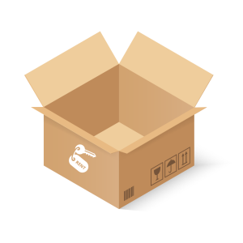
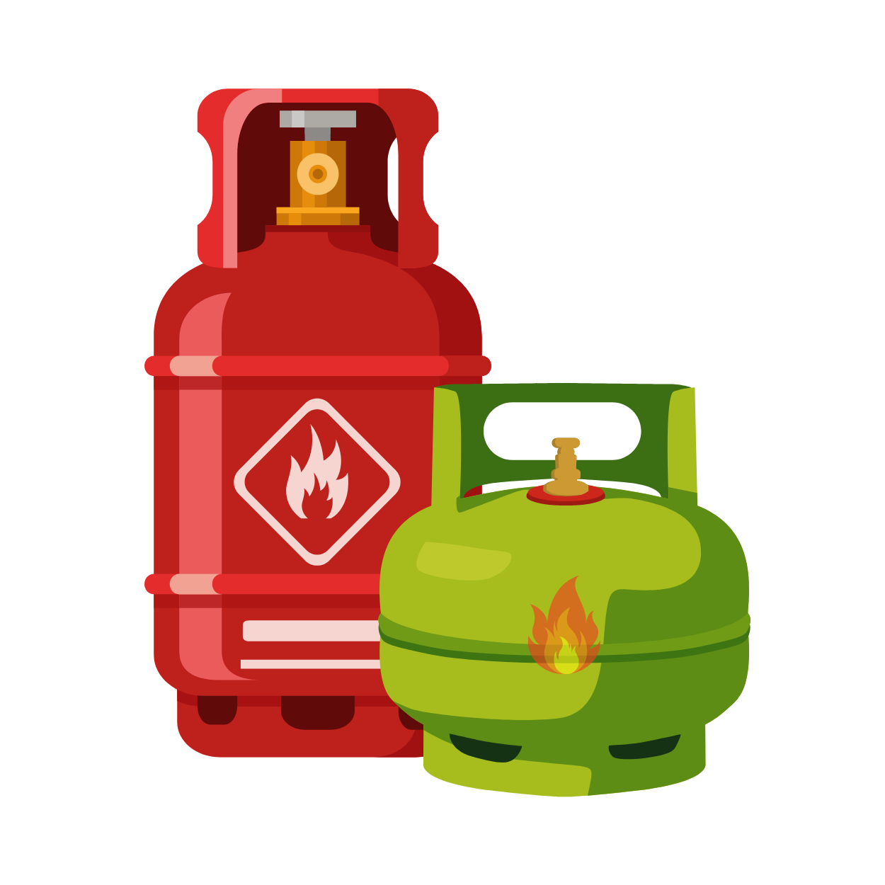
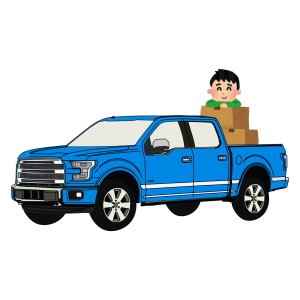
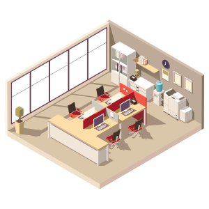
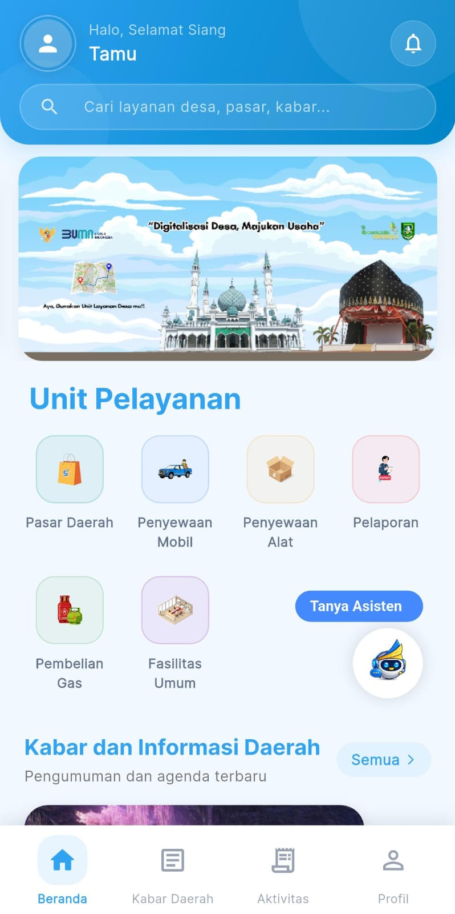
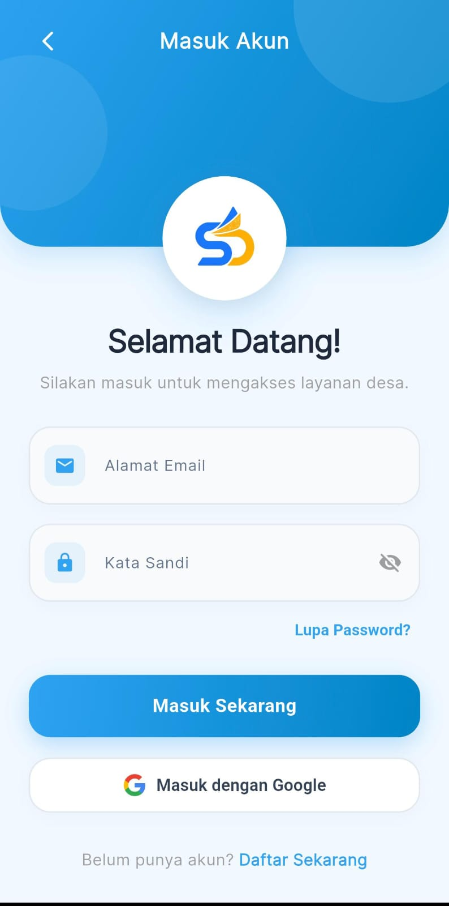

Penyewaan Alat
Sewa tenda, sound system, kursi, dan perlengkapan acara milik BUMDes secara daring dengan jadwal yang jelas.
BUMDesSiladesBeng menyatukan layanan BUMDes, pasar daerah, dan aspirasi warga dari tingkat kabupaten hingga pelosok desa dalam satu ekosistem digital yang transparan dan mudah diakses.

Penyewaan Alat
Pembelian Gas
Penyewaan Kendaraan
Fasilitas UmumSiladesBeng (Sistem Sinergi Layanan dan Aspirasi Desa) adalah platform digital terpadu berskala kabupaten yang memodernisasi tata kelola administrasi dan pelayanan publik, dari jaringan kecamatan hingga tingkat desa se-Kabupaten Bengkalis.
Seluruh pilar layanan esensial masyarakat dan operasional BUMDes dihimpun dalam satu pintu: penyewaan alat, pendistribusian gas, peminjaman kendaraan, pemanfaatan fasilitas umum, pasar daerah, sampai Pelaporan Warga dan pusat Kabar dan Informasi Daerah secara real-time, dibantu asisten daring yang siap menjawab pertanyaan warga.
Setiap desa dapat mengaktifkan unit layanan sesuai kebutuhan wilayahnya masing-masing.
Sewa tenda, sound system, kursi, dan perlengkapan acara milik BUMDes secara daring dengan jadwal yang jelas.
BUMDesPemesanan gas LPG bersubsidi maupun non-subsidi dengan kuota dan pencatatan distribusi yang tertib.
BUMDesSewa mobil desa, ambulans, dan bus lengkap dengan pilihan supir sendiri atau disediakan, serta ketentuan bahan bakar.
KendaraanAjukan pemakaian balai desa, lapangan, dan gedung serbaguna tanpa perlu antre di kantor desa.
FasilitasEtalase produk pelaku usaha se-Kabupaten Bengkalis dalam satu pasar digital yang terbuka untuk umum.
PublikSampaikan aspirasi dan laporan infrastruktur, kebersihan, atau keselamatan beserta bukti foto — status ditindaklanjuti secara terbuka.
AspirasiPengumuman resmi, agenda kegiatan, dan informasi daerah terbaru yang tersaji secara real-time.
Informasi

Versi Android SiladesBeng dibagikan melalui Google Drive resmi pengelola. Unduh berkasnya, pasang, lalu masuk dengan akun yang sama seperti di web.
Buka layanan lewat peramban, atau pasang aplikasi mobile dari tautan Google Drive resmi.
Daftar dengan email atau akun Google, lalu pilih desa atau kelurahan tempat Anda berdomisili.
Pindai KTP dan lakukan verifikasi biometrik wajah — data dicocokkan dengan Dukcapil.
Pesan unit layanan, belanja di pasar daerah, atau kirim laporan warga.
Pilih jalur yang paling nyaman untuk Anda — keduanya memakai akun dan data yang sama.
Langsung dipakai dari peramban di komputer maupun ponsel, tanpa perlu memasang apa pun.
Buka Layanan WebBerkas pemasangan dibagikan lewat Google Drive resmi pengelola SiladesBeng.
Unduh Aplikasi Mobile